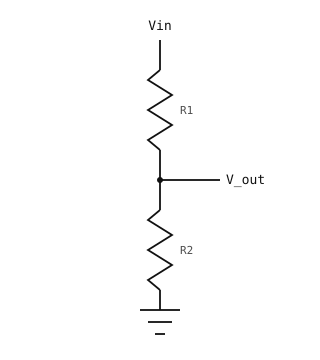

3.12. Citirea semnalelor analogice cu ADC-ul¶
Până acum camera a citit semnale digitale – un pin este fie 0 fie 1, un comutator este deschis sau închis. Majoritatea semnalelor care provin de la senzorii din lumea reală sunt analogice: o tensiune continuă care variază lin pe un anumit interval. Un fotorezistor parcurge toate tensiunile dintre cele două șine pe măsură ce luminozitatea ambientală se modifică. Ieșirea unui senzor de temperatură derivează cu câțiva milivolți pe măsură ce o încăpere se încălzește. Ieșirea unui microfon crește și scade odată cu sunetul din jurul lui.
Un convertor analog-digital (ADC) este puntea de legătură. El eșantionează tensiunea de pe un pin și returnează un întreg pe care Python îl poate citi ca pe orice altă valoare.
3.12.1. Cuantizarea¶
O valoare digitală nu poate reprezenta exact o tensiune continuă. Sarcina ADC-ului este să cuantizeze – să fixeze fiecare eșantion la cel mai apropiat nivel dintr-un set fix de niveluri. Un ADC pe N biți are 2^N niveluri; un convertor pe 12 biți are 4096 dintre acestea distribuite pe intervalul său de intrare.

Cuantizarea: fiecare eșantion al semnalului analogic (linie continuă) este rotunjit la unul dintr-un set finit de niveluri digitale (linia punctată în trepte).¶
Tensiunea dintre două niveluri adiacente este pasul ADC-ului; orice valoare mai mică decât atât dispare în rotunjire. Un ADC pe 12 biți pe un interval de 3,3 V are un pas de aproximativ 3.3 / 4096 ≈ 0.8 mV – suficient de fin încât majoritatea semnalelor să pară practic continue în software.
3.12.2. Clasa machine.ADC¶
machine.ADC încapsulează un canal de intrare analogic. Construiți-o cu pinul pe care doriți să-l citiți, apoi apelați read_u16():
from machine import ADC
adc = ADC("P6")
value = adc.read_u16()
print(value)
read_u16() returnează întotdeauna un întreg fără semn pe 16 biți, între 0 și 65535. Rezoluția nativă a ADC-ului variază în funcție de placă (12 biți pe STM32, specifică portului în alte cazuri); rezultatul este aliniat la stânga în cei 16 biți, astfel încât detaliul hardware să nu transpară în Python – o valoare de 65535 reprezintă scala completă indiferent de cip.
Tensiunea de referință – intrarea care corespunde scalei complete – depinde de placă. Consultați Plăci OpenMV pentru valoarea de pe camera dumneavoastră. Orice tensiune peste referință este citită ca scală completă (și poate deteriora pinul dacă depășește tensiunea de intrare maximă absolută).
3.12.2.1. Conversia valorilor numerice în tensiune¶
Maparea de la valori numerice la tensiune este liniară, valorile la scală completă mapându-se exact la Vref:
voltage = counts × Vref / 65535
În cod:
VREF = 3.3 # cam-dependent; see the quickref
counts = adc.read_u16()
voltage = counts * VREF / 65535
print(voltage, "V")
3.12.3. Divizoare de tensiune¶
Două rezistoare în serie între o șină de tensiune și masă formează un divizor de tensiune. Nodul dintre ele se află la o tensiune determinată de raportul celor două rezistoare:

Un divizor de tensiune: R1 și R2 în serie reduc Vin la V_out.¶
V_out = Vin × R2 / (R1 + R2)
Rezistoare egale dau jumătate din tensiunea șinei; R2 mult mai mic decât R1 plasează priza aproape de masă; R2 mult mai mare o plasează aproape de șină.
Formula presupune că nimic altceva nu absoarbe un curent apreciabil din V_out. Un pin ADC are impedanță mare (megohmi, nanoamperi) și satisface cu ușurință această condiție, astfel încât un divizor care alimentează un ADC se comportă conform previziunilor formulei.
3.12.4. Potențiometre¶
Un potențiometru este o singură componentă fizică ce reprezintă exact un divizor de tensiune, cu un cursor glisant care deplasează priza între cele două capete. Rotirea butonului modifică simultan R1 și R2, păstrând suma lor (rezistența totală a potențiometrului) constantă.

Un potențiometru conectat ca sursă manuală de tensiune pentru ADC: 3,3 V la un capăt, masă la celălalt, cursorul la pin.¶
Un potențiometru este dispozitivul de intrare prin excelență pentru a încerca ADC-ul. Conectați un capăt la 3.3 V, celălalt la masă, iar cursorul la un pin compatibil cu ADC; rotirea butonului parcurge cu cursorul toate tensiunile dintre cele două șine.
import time
from machine import ADC
pot = ADC("P6")
VREF = 3.3
while True:
counts = pot.read_u16()
voltage = counts * VREF / 65535
print(voltage, "V")
time.sleep_ms(100)
3.12.5. Citirea tensiunilor mai mari cu un divizor¶
O tensiune peste Vref va fixa ADC-ul la scală completă și poate deteriora intrarea dacă depășește valoarea maximă absolută. Pentru a citi o sursă mai mare – o baterie, ieșirea unui senzor care variază peste Vref – reduceți-o cu un divizor de tensiune fix înainte să ajungă la pin:

Reducerea unei surse de tensiune ridicată pentru a se încadra în ADC: R1 și R2 formează un divizor de tensiune fix a cărui priză alimentează pinul ADC.¶
Alegeți R1 și R2 astfel încât tensiunea divizată să rămână în intervalul ADC-ului la cea mai mare tensiune de intrare pe care o anticipați:
V_adc = V_in × R2 / (R1 + R2)
Pentru un maxim V_in = 12 V și o referință de 3,3 V, raportul R2 / (R1 + R2) trebuie să fie cel mult 3.3 / 12 ≈ 0.275. O alegere obișnuită, cu o mică marjă, este R1 = 33 kΩ, R2 = 10 kΩ. Raportul este 10 / 43 ≈ 0.233, deci V_adc ajunge la maximum aproximativ 12 × 0.233 ≈ 2.79 V – în siguranță sub Vref.
Pentru a recupera valoarea originală V_in dintr-o citire ADC, inversați formula divizorului:
V_in = V_adc × (R1 + R2) / R2
În cod:
from machine import ADC
R1 = 33_000
R2 = 10_000
VREF = 3.3
adc = ADC("P6")
counts = adc.read_u16()
v_adc = counts * VREF / 65535
v_in = v_adc * (R1 + R2) / R2
print(v_in, "V")
Câteva note practice:
Divizorul absoarbe continuu
V_in / (R1 + R2). CuR1 + R2 = 43 kΩșiV_in = 12 V, aceasta înseamnă aproximativ 280 µA – de obicei neglijabil, dar dacă sursa este alimentată de baterie, luați în considerare rezistoare mai mari (100 kΩ până la 1 MΩ) pentru a reduce consumul în repaus.Toleranța rezistoarelor (de obicei ±1 % sau ±5 %) se reflectă direct în acuratețea măsurătorii. Două rezistoare de ±5 % pot conferi valorii recuperate
V_ino eroare în cel mai rău caz de aproximativ ±10 %.Impedanța de sursă a divizorului se combină cu orice capacitate parazită pentru a filtra trece-jos intrarea. Pentru semnalele cu variație rapidă acest lucru contează; pentru verificarea tensiunii unei baterii nu contează.